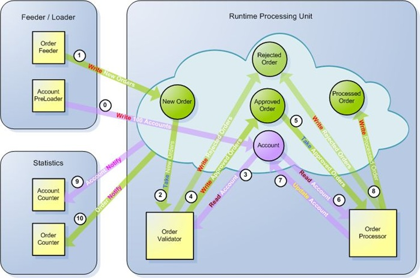

In this tutorial, you will see three core space-based concepts in action: architecture, application deployment, and scaling.
Space-based architecture is an architecture that relies on co-location of business logic and data, and partitioning of work. Space-based architecture is also characterized by a reliance on asynchronous (yet typically low-latency) operations.
Space-based deployment is a deployment model that refers to machine capabilities and availability as deployment targets, rather than a set of specific, pre-allocated machines. It treats a cluster of machines as the deployment target, and the cluster management facilities handle deployment to specific machines.
Space-based application scaling is a management mechanism which controls allocation and de-allocation of resources based on the application's stated service levels, such that the management applications handle what a node's assigned role in the application should be.
Our example application will be a simple order processing application. Orders get recorded into the system, and then are validated and processed; our application also includes a web application to display results.
This is not a "real application," of course; as such, there are a lot of real-world features that won't be covered in this tutorial. However, this will demonstrate a testable, asynchronous, transactional event model with a presentation layer.
The full source code for this project is available on GigaSpaces' github repository, in the order.management directory.
The application is designed to record orders placed for specific accounts. The orders consist of an account reference, an operation ("buy" or "sell") and an amount. Accounts consist of an identifier (a key) and a current account balance.

An order also has a status which reflects its current state. The states an order can be in include:
There are six sections to consider in this tutorial:
As our application description suggests, there are two primary entities, and two status-related types. The entities are OrderEvent and AccountData; the statuses are, surprisingly, Status and Operation.
The Status is a Java enum that reflects the states an order can be in.
The Operation is a Java enum that reflects one of two operations for an order: Buy or Sell.
The OrderEvent is a simple JavaBean, which exposes an id (a unique identifier for the data grid), an account key, a price, the order status, and an operation for the order.
The AccountData object is much simpler, exposing only an account key (called the username in this model) and a balance.
package com.gigaspaces.tutorials.common.model;
import com.gigaspaces.annotation.pojo.SpaceClass;
import com.gigaspaces.annotation.pojo.SpaceId;
import com.gigaspaces.annotation.pojo.SpaceProperty;
import com.gigaspaces.annotation.pojo.SpaceRouting;
import java.io.Serializable;
import java.math.BigDecimal;
@SpaceClass
public class AccountData implements Serializable {
String userName;
BigDecimal balance;
static final long serialVersionUID = 162512L;
@SpaceProperty
public BigDecimal getBalance() {
return balance;
}
public void setBalance(BigDecimal balance) {
this.balance = balance;
}
@SpaceRouting
@SpaceId
public String getUserName() {
return userName;
}
public void setUserName(String userName) {
this.userName = userName;
}
@Override
public String toString() {
final StringBuilder sb = new StringBuilder();
sb.append("AccountData");
sb.append("{balance=").append(balance);
sb.append(", userName='").append(userName).append('\'');
sb.append('}');
return sb.toString();
}
@Override
public boolean equals(Object o) {
if (this == o) {
return true;
}
if (!(o instanceof AccountData)) {
return false;
}
AccountData that = (AccountData) o;
if (balance != null ? !balance.equals(that.balance) : that.balance != null) {
return false;
}
if (userName != null ? !userName.equals(that.userName) : that.userName != null) {
return false;
}
return true;
}
@Override
public int hashCode() {
int result = userName != null ? userName.hashCode() : 0;
result = 31 * result + (balance != null ? balance.hashCode() : 0);
return result;
}
}
package com.gigaspaces.tutorials.common.model;
import com.gigaspaces.annotation.pojo.*;
import com.gigaspaces.metadata.index.SpaceIndexType;
import java.io.Serializable;
import java.math.BigDecimal;
@SpaceClass
public class OrderEvent implements Serializable {
private String id;
private Operation operation;
private Status status;
private String userName;
private BigDecimal price;
private Long lastUpdateTime;
static final long serialVersionUID = 812753L;
public OrderEvent() {
}
@SpaceProperty
@SpaceIndex(type = SpaceIndexType.BASIC)
public Long getLastUpdateTime() {
return lastUpdateTime;
}
public void setLastUpdateTime(Long lastUpdateTime) {
this.lastUpdateTime = lastUpdateTime;
}
@SpaceId(autoGenerate = true)
public String getId() {
return id;
}
public void setId(String id) {
this.id = id;
}
@SpaceProperty
public Operation getOperation() {
return operation;
}
public void setOperation(Operation operation) {
this.operation = operation;
}
@SpaceRouting
public String getUserName() {
return userName;
}
public void setUserName(String userName) {
this.userName = userName;
}
@SpaceProperty
public BigDecimal getPrice() {
return price;
}
public void setPrice(BigDecimal price) {
this.price = price;
}
@SpaceProperty
public Status getStatus() {
return status;
}
public void setStatus(Status status) {
this.status = status;
}
@Override
public String toString() {
final StringBuilder sb = new StringBuilder();
sb.append("OrderEvent");
sb.append("{id='").append(id).append('\'');
sb.append(", operation=").append(operation);
sb.append(", status=").append(status);
sb.append(", userName='").append(userName).append('\'');
sb.append(", price=").append(price);
sb.append(", lastUpdateTime=").append(lastUpdateTime);
sb.append('}');
return sb.toString();
}
@Override
public boolean equals(Object o) {
if (this == o) {
return true;
}
if (!(o instanceof OrderEvent)) {
return false;
}
OrderEvent that = (OrderEvent) o;
if (operation != that.operation) {
return false;
}
if (id != null ? !id.equals(that.id) : that.id != null) {
return false;
}
if (price != null ? !price.equals(that.price) : that.price != null) {
return false;
}
if (status != that.status) {
return false;
}
if (userName != null ? !userName.equals(that.userName) : that.userName != null) {
return false;
}
return true;
}
@Override
public int hashCode() {
int result = operation != null ? operation.hashCode() : 0;
result = 31 * result + (status != null ? status.hashCode() : 0);
result = 31 * result + (id != null ? id.hashCode() : 0);
result = 31 * result + (userName != null ? userName.hashCode() : 0);
result = 31 * result + (price != null ? price.hashCode() : 0);
return result;
}
}
Our application has some basic services that support our business logic. They are encapsulated in two interfaces (and two implementing classes).
Our order-related services are:
Our account-related services are:
package com.gigaspaces.tutorials.common.service;
import com.gigaspaces.tutorials.common.model.AccountData;
public interface AccountDataService {
boolean accountExists(String userName);
void save(AccountData data);
AccountData load(String userName, int timeout);
AccountData[] getAllAccountData();
}
package com.gigaspaces.tutorials.common.service.impl;
import com.gigaspaces.tutorials.common.dao.AccountDataDAO;
import com.gigaspaces.tutorials.common.model.AccountData;
import com.gigaspaces.tutorials.common.service.AccountDataService;
import org.springframework.beans.factory.annotation.Autowired;
import org.springframework.stereotype.Service;
@Service
public class AccountDataServiceImpl implements AccountDataService {
@Autowired
AccountDataDAO dao;
@Override
public boolean accountExists(String userName) {
return dao.readById(userName) != null;
}
@Override
public void save(AccountData data) {
dao.write(data);
}
/**
* Destructive read for account with matching userName
*
* @param userName the username (account id)
* @param timeout number of ms to wait
* @return a matching account, or null if not found
*/
@Override
public AccountData load(String userName, int timeout) {
return dao.takeById(userName, timeout);
}
@Override
public AccountData[] getAllAccountData() {
return dao.readMultiple("order by username");
}
}
package com.gigaspaces.tutorials.common.service;
import com.gigaspaces.tutorials.common.model.OrderEvent;
public interface OrderEventService {
void post(OrderEvent orderEvent);
OrderEvent[] getAllOrderEvents();
}
package com.gigaspaces.tutorials.common.service.impl;
import com.gigaspaces.tutorials.common.dao.OrderEventDAO;
import com.gigaspaces.tutorials.common.model.OrderEvent;
import com.gigaspaces.tutorials.common.service.OrderEventService;
import org.springframework.beans.factory.annotation.Autowired;
import org.springframework.stereotype.Service;
@Service
public class OrderEventServiceImpl implements OrderEventService {
@Autowired
OrderEventDAO dao;
@Override
public void post(OrderEvent orderEvent) {
dao.write(orderEvent);
}
@Override
public OrderEvent[] getAllOrderEvents() {
return dao.readMultiple("order by lastUpdateTime");
}
}
There are three workflow stages for the order processing application, two related to actually handling orders, one related to initiating orders.
When a new order is posted, a validation process makes sure the order references a valid account; if it does not, the order is set to a terminal state ("account not found") and processing ends.
After validation, processing the order takes place (if the account is found, of course.) Processing the order includes checking the account balance to make sure it can "afford" the order. If it can't, the order is set to indicate insufficient funds; if it can, the account balance is changed and the order is set to "processed" status.
This is all accomplished with the event mechanism in GigaSpaces XAP.
The validation stage is a good example of the event mechanism. First, we annotate the class with @EventDriven, which tells the context scanning in Spring that this class is an event handler, surprisingly. Inside the class, we have two methods: getTemplate() and handleEvent, each with its own annotation.
The getTemplate)( method is annotated with @EventTemplate, which tells the event container that this method provides a "template object." This template is used to match objects to be handled by this class. In the validation stage, it returns an OrderEvent (thus stating that OrderEvent classes will be passed to this class' event handler) with a status of "New" (therefore passing in only OrderEvent instances with "new" status.)
The handleEvent() method is annotated with @SpaceDataEvent, which marks it as the event handler. The signature is special; it means that the method will receive a single event at a time (because the argument is a single event), of type OrderEvent. It also returns an OrderEvent, which means that an OrderEvent is consumed by the event handler, and a new one is written into the datagrid (the OrderEvent returned) when processing is complete.
It's important to recognize that this event handler has no explicit reference to the data grid. It has one reference to an AccountData-related service (to check to see if the account exists), but that's it. This means that the validation phase of our application is very easy to test, as shown in the following test code:
package com.gigaspaces.tutorials.validator;
import com.gigaspaces.tutorials.common.builder.OrderEventBuilder;
import com.gigaspaces.tutorials.common.model.Operation;
import com.gigaspaces.tutorials.common.model.OrderEvent;
import com.gigaspaces.tutorials.common.model.Status;
import com.gigaspaces.tutorials.common.service.AccountDataService;
import org.testng.annotations.Test;
import static org.mockito.Mockito.mock;
import static org.mockito.Mockito.when;
import static org.testng.Assert.assertEquals;
import static org.testng.Assert.assertNull;
public class ValidatorTest {
@Test
public void testValidator() {
AccountDataService service = mock(AccountDataService.class);
when(service.accountExists("1234")).thenReturn(true);
Validator validator = new Validator();
validator.service = service;
OrderEvent event = new OrderEventBuilder()
.id("1234")
.username("1234")
.status(Status.NEW)
.operation(Operation.BUY)
.price(12)
.build();
OrderEvent newEvent = validator.handleEvent(event);
assertEquals(newEvent.getStatus(), Status.PENDING);
assertNull(newEvent.getId());
event = new OrderEventBuilder()
.id("1235")
.username("1235")
.status(Status.NEW)
.operation(Operation.BUY)
.price(12)
.build();
newEvent = validator.handleEvent(event);
assertEquals(newEvent.getStatus(), Status.ACCOUNT_NOT_FOUND);
assertNull(newEvent.getId());
}
}
So what is this test doing?
First, it sets up a mock AccountDataService, via Mockito. This creates a "fake implementation" of the interface, which we can use to configure specific responses, which we do in the next line.
What the when(service.accountExists("1234")).thenReturn(true); line specifies is that when the service' accountExists() method is called with "1234", return a true result. We can add as many parameters (and method stubs) as we like.
We then create a new Validator service, and use our mock service to set the AccountDataService reference the validator needs.
The next thing we do is create an OrderEvent (with an account that we've said should be "found" according to our mock service); we call the Validator directly (with ordinary java code), and examine the result to make sure it conforms to what our specification indicates (i.e., for a "found account," the OrderEvent should be set to "pending" status.)
After we pass the first aspect of our test, we call the Validator again with an account that should not be found, to confirm that the status of the OrderEvent is set to "account not found."
This test has no reliance whatsoever on the data grid. Due to how the event modeling in GigaSpaces is configured, however, we can assert that our Validator event handler is working as specified. The only question left is whether our event handler is configured properly; we can set up a test for this, too, although it requires a Spring configuration.
Actually, it doesn't require a Spring configuration. But since our deployment environment will be Spring, we should use Spring to set up our configuration for testing. This allows the test to serve as an example of the configuration requirements as well as serving as a test of the event handler itself.
What's happening here?
The Spring configuration sets up an embedded datagrid, then does a context scan for the com.gigaspaces.tutorials.validator package (which is why the validator package is separated from the processor package, as it turns out; if they were in the same package, the context scan would have to be configured to not set up the other event handler, because one of our states isn't terminal.)
Our test then initializes an account (in the method annotated with @BeforeMethod). In the actual test method itself, we follow the same sequence as our non-grid-based test; we create an order event with a valid and an invalid account, and feed it into the system. The main difference is that the way that we access the data into the validator is grid-based rather than plain Java-based.
If we've configured the event handler properly, then our test will result in a read of an order event with a status that matches our read event, and we pass the test; we know the event handler is working as specified. If nothing is returned, we know that something's wrong in how we're configuring the event handler; either it's not being instantiated, or our template isn't matching the event.
Handling orders is all well and good (and critical, for that matter, as it's the primary goal of the application) but without orders being fed into the data grid, there's nothing for the order handling mechanism to handle. Our last primary process is a feeder application.
The feeder application is very simple; after creating a set of valid accounts, create OrderEvents at regular intervals that may or may not pass validation and store them into the system. (We want invalid orders in order to see our entire state mechanism in action; otherwise, the validation stage would have only one output state. While this is valid, it's less interesting than using the entire workflow.)
The feeder generates "buy" and "sell" events randomly, and does the same for pricing; the end result is that the "insufficient funds" state is likely to occur after some time, but not immediately. (We could create circumstances under which it would occur almost immediately, by creating accounts with very low balances, which would cause the normal "buy" operations to fail with insufficient funds. This is left as an exercise for the reader.)
There are many different ways we could go about displaying the processes our application uses. One is already in the code, in that we write to the application logs constantly. However, one rarely exposes application logs to users, so that means we need to write a user interface of some kind.
We could write a command-line application that looked for events in the same way our validation and processing event handlers do (i.e., by watching for terminal events). Here's how that code might look without Spring, just to demonstrate:
package com.gigaspaces.cmdline;
import com.gigaspaces.tutorials.common.builder.OrderEventBuilder;
import com.gigaspaces.tutorials.common.model.OrderEvent;
import com.gigaspaces.tutorials.common.model.Status;
import com.j_spaces.core.IJSpace;
import org.openspaces.core.GigaSpace;
import org.openspaces.core.GigaSpaceConfigurer;
import org.openspaces.core.space.UrlSpaceConfigurer;
public class CommandLineClient {
public static void main(String... args) {
// note remote reference to the space
UrlSpaceConfigurer configurer = new UrlSpaceConfigurer("jini://*/*/orderManagement");
GigaSpace gigaSpace = new GigaSpaceConfigurer(configurer).gigaSpace();
SQLQuery<OrderEvent> query = new SQLQuery<OrderEvent>(OrderEvent.class,
"order by lastUpdateTime DESC");
while (true) {
OrderEvent event = gigaSpace.read(query, 1000);
if (event != null) {
System.out.println(event);
}
}
}
}
This code would connect to the data grid, and poll for the most recently updated order events. It's not especially efficient (or pretty) code; what we can do instead is develop a web application that, while not much better aesthetically, at least gives us more information and the basis upon which we might develop a more full-featured user interface.
The basis of the web application is a fairly standard Spring MVC structure. In order to use proper design, first we implement a service to isolate our primary functionality, and then we implement it as we would any other Spring-wired bean, with a class that more or less relies on the services we've already written:
package com.gigaspaces.rest.service;
import com.gigaspaces.tutorials.common.model.AccountData;
import com.gigaspaces.tutorials.common.model.OrderEvent;
public interface OrderManagementService {
OrderEvent[] getOrderEvents();
AccountData[] getAccountData();
}
package com.gigaspaces.rest.service;
import com.gigaspaces.tutorials.common.model.AccountData;
import com.gigaspaces.tutorials.common.model.OrderEvent;
import com.gigaspaces.tutorials.common.service.AccountDataService;
import com.gigaspaces.tutorials.common.service.OrderEventService;
import org.springframework.beans.factory.annotation.Autowired;
import org.springframework.stereotype.Service;
@Service
public class OrderManagementServiceImpl implements OrderManagementService {
@Autowired
OrderEventService orderEventService;
@Autowired
AccountDataService accountDataService;
@Override
public OrderEvent[] getOrderEvents() {
return orderEventService.getAllOrderEvents();
}
@Override
public AccountData[] getAccountData() {
return accountDataService.getAllAccountData();
}
}
We then write a Controller, which will intercept a URL path, populate a model, and display a view, using this service.
package com.gigaspaces.rest.service;
import org.springframework.beans.factory.annotation.Autowired;
import org.springframework.stereotype.Controller;
import org.springframework.web.bind.annotation.RequestMapping;
import org.springframework.web.servlet.ModelAndView;
@Controller
public class OrderManagementServiceController {
@Autowired
OrderManagementService service;
@RequestMapping(value = "/orders/*")
public ModelAndView getAllOrders() {
return new ModelAndView("orders", "orderEvents", service.getOrderEvents());
}
@RequestMapping(value = "/accounts/*")
public ModelAndView getAllAccounts() {
return new ModelAndView("accounts", "accountData", service.getAccountData());
}
}
The views are fairly normal. Here's the accountData.jsp file, which displays all of the accounts:
<!doctype html>
<%@ page language="java" contentType="text/html; charset=UTF-8" pageEncoding="UTF-8" %>
<%@ taglib prefix="c" uri="http://java.sun.com/jsp/jstl/core" %>
<html>
<head>
<meta http-equiv="Content-Type" content="text/html; charset=UTF-8">
<title>Orders</title>
</head>
<body>
<table border="1">
<c:forEach var="accountDatum" items="${accountData}">
<tr>
<td>${accountDatum.userName}</td>
<td>${accountDatum.balance}</td>
</tr>
</c:forEach>
</table>
</body>
</html>
We need a web.xml, of course (depending on the Java Servlet version being used), but in this case it's very plain, only configuring the Spring MVC DispatcherServlet:
<?xml version="1.0" encoding="UTF-8"?>
<web-app xmlns:xsi="http://www.w3.org/2001/XMLSchema-instance"
xmlns="http://java.sun.com/xml/ns/javaee"
xmlns:web="http://java.sun.com/xml/ns/javaee/web-app_2_5.xsd"
xsi:schemaLocation="http://java.sun.com/xml/ns/javaee
http://java.sun.com/xml/ns/javaee/web-app_2_5.xsd"
version="2.5">
<servlet>
<servlet-name>orderManagement</servlet-name>
<servlet-class>org.springframework.web.servlet.DispatcherServlet</servlet-class>
<load-on-startup>1</load-on-startup>
</servlet>
<servlet-mapping>
<servlet-name>orderManagement</servlet-name>
<url-pattern>/orderManagement/*</url-pattern>
</servlet-mapping>
</web-app>
The last thing we need in order to tie all of this together is a configuration file (orderManagement-servlet.xml, as required by convention, based on the DispatcherServlet's servlet-name). This configuration file looks much like every other GigaSpaces configuration file, except that it adds the Spring MVC configuration as well:
<?xml version="1.0" encoding="UTF-8"?>
<beans xmlns="http://www.springframework.org/schema/beans"
xmlns:xsi="http://www.w3.org/2001/XMLSchema-instance"
xmlns:p="http://www.springframework.org/schema/p"
xmlns:context="http://www.springframework.org/schema/context"
xmlns:mvc="http://www.springframework.org/schema/mvc"
xmlns:os-core="http://www.openspaces.org/schema/core"
xsi:schemaLocation="http://www.springframework.org/schema/beans http://www.springframework.org/schema/beans/spring-beans-[%=Versions.spring%].xsd
http://www.openspaces.org/schema/core http://www.openspaces.org/schema/core/openspaces-core.xsd
http://www.springframework.org/schema/mvc http://www.springframework.org/schema/mvc/spring-mvc-schema/mvc/spring-mvc-.xsd
http://www.springframework.org/schema/context http://www.springframework.org/schema/context/spring-context-[%=Versions.spring%].xsd">
<bean
class="org.springframework.beans.factory.config.PropertyPlaceholderConfigurer">
</bean>
<context:annotation-config />
<context:component-scan base-package="com.gigaspaces.rest.service"/>
<context:component-scan base-package="com.gigaspaces.tutorials.common"/>
<!-- bean class="org.springframework.web.servlet.view.BeanNameViewResolver" /-->
<bean class="org.springframework.web.servlet.view.ContentNegotiatingViewResolver">
<property name="mediaTypes">
<map>
<entry key="xml" value="application/xml"/>
<entry key="html" value="text/html"/>
</map>
</property>
<property name="viewResolvers">
<list>
<bean
class="org.springframework.web.servlet.view.InternalResourceViewResolver">
<property name="prefix" value="/WEB-INF/jsp/"/>
<property name="suffix" value=".jsp"/>
</bean>
<bean class="org.springframework.web.servlet.view.BeanNameViewResolver"/>
</list>
</property>
</bean>
<os-core:space-proxy id="space" name="orderManagement"/>
<os-core:giga-space id="gigaSpace" space="space"/>
</beans>
<?xml version="1.0" encoding="UTF-8"?>
<beans xmlns="http://www.springframework.org/schema/beans"
xmlns:xsi="http://www.w3.org/2001/XMLSchema-instance"
xmlns:p="http://www.springframework.org/schema/p"
xmlns:context="http://www.springframework.org/schema/context"
xmlns:mvc="http://www.springframework.org/schema/mvc"
xmlns:os-core="http://www.openspaces.org/schema/core"
xsi:schemaLocation="http://www.springframework.org/schema/beans http://www.springframework.org/schema/beans/spring-beans.xsd
http://www.openspaces.org/schema/core http://www.openspaces.org/schema/core/openspaces-core.xsd
http://www.springframework.org/schema/mvc http://www.springframework.org/schema/mvc/spring-mvc-schema/mvc/spring-mvc-.xsd
http://www.springframework.org/schema/context http://www.springframework.org/schema/context/spring-context.xsd">
<bean
class="org.springframework.beans.factory.config.PropertyPlaceholderConfigurer">
</bean>
<context:annotation-config />
<context:component-scan base-package="com.gigaspaces.rest.service"/>
<context:component-scan base-package="com.gigaspaces.tutorials.common"/>
<!-- bean class="org.springframework.web.servlet.view.BeanNameViewResolver" /-->
<bean class="org.springframework.web.servlet.view.ContentNegotiatingViewResolver">
<property name="mediaTypes">
<map>
<entry key="xml" value="application/xml"/>
<entry key="html" value="text/html"/>
</map>
</property>
<property name="viewResolvers">
<list>
<bean
class="org.springframework.web.servlet.view.InternalResourceViewResolver">
<property name="prefix" value="/WEB-INF/jsp/"/>
<property name="suffix" value=".jsp"/>
</bean>
<bean class="org.springframework.web.servlet.view.BeanNameViewResolver"/>
</list>
</property>
</bean>
<os-core:space-proxy id="space" name="orderManagement"/>
<os-core:giga-space id="gigaSpace" space="space"/>
</beans>
This configuration is simple; it directs Spring to configure Spring MVC (which takes up most of the room in the configuration), and looks for any services in the com.gigaspaces.tutorials.common and com.gigaspaces.rest.service packages, and configures a connection to the data grid.
What this creates is a very, very simple web application, one that allows us to see the orders and accounts as they exist at the time of request. A more functional application would provide a selection criteria, or perhaps paging to make the application more appealing, but the primary goal here is to expose data.
We've done a lot, as it turns out. We've coded up a domain that incorporates our application entities and their state, and we've designed a set of services that modify our application state, along with tests that validate those services. We've created a web application that (presumably) displays our data.
We haven't talked about our deployment organization.
Our application so far has been designed along four modules: a "common" module, a "processor" module, a "feeder" module, and a "web" module. The common module consists of the basic services and entity model, things about which every aspect of our application should be aware. The processor module contains the order handling mechanism - the entire workflow of the application in one module. (This could be split out into multiple modules, which can yield some scalability benefits.)
The common module serves as a set of resources for the processor, feeder, and web modules, so it doesn't show up as a deployment artifact. The other modules (again: feeder, processor, and web) are "processing units", deployable artifacts for GigaSpaces
The model for deployment used by the feeder and the processor is a "processing unit" model, unique to /META-INF/spring/pu.xml in the jar; this configuration will be loaded on deployment, and serves as the "launch point" for the processing unit lifecycle.
The model followed by the "web" module is a standard Java EE web module, a .war. It has no special requirements at all; the GigaSpaces dependencies are provided by the environment, when deployed in
The "processor" module is stateful, in that it establishes a data model and defines a container for the data grid. Stateful processing units are the basis for data scalability in GigaSpaces; to add memory to a grid, stateful processing units are added. A stateful processing unit connects to a data grid using a "local URL," which might look like /./dataGridName.
The "feeder" and "web" modules are stateless, in that they don't define a container for the data grid; they use a "remote URL", which might look like jini://*/*/dataGridName. As stateless containers, they provide services for a stateful container; therefore, they have dependencies on stateful containers and must be deployed after the stateful containers are deployed.
To deploy a module in
Starting the container services can be done in multiple ways (with varying features) but for the purposes of simplicity, we'll use the Grid Service Agent, which starts up each service the datagrid requires.
Our deployment will execute the following steps, in order:
After these steps have been completed, we can use the logs or the web application to examine the progress of the application.
The first thing we do is start up a GS-Agent. If you're in the GigaSpaces installation's bin directory, the command line to do this is:
gs-agent gsa.gsc 5
gs-agent.sh gsa.gsc 5
The easiest way to deploy the other processing units is to use the GigaSpaces GUI application, which is started with gs-ui.sh. The UI will automatically locate a candidate grid, and choosing "Deploy" will allow you to navigate the file system to locate the deployable jars.
Deploying the processor module should have no real effect on the system; it creates a data grid, but does not populate a dataset. The web application is passive (read-only).
It's when the feeder module is deployed that things start to happen. It creates the accounts and begins to feed trades into the system; the web module can then display the changes as they occur and the current status of the system.
The GS-UI is able to display the logs of the containers, which can show you where each order is being processed as well as its result.
We've seen a number of things.
While this application is nowhere near a "working application" by any measure of the real world, the processes we've seen in building this sample application provide a working model for a message-oriented, highly scalable application (even if we're not pushing the limits of scalability in this deployment.)
Possible enhancements include dynamic (elastic) scaling, a security model, paged output of the account data, and service remoting.